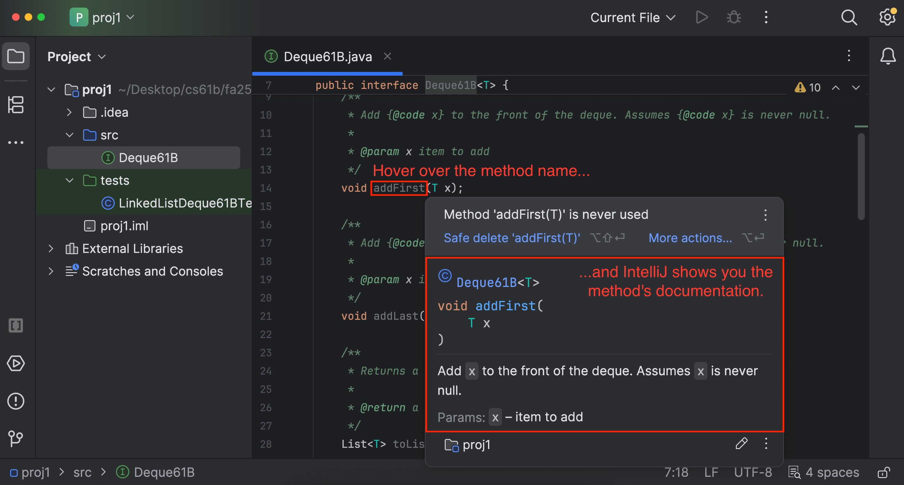
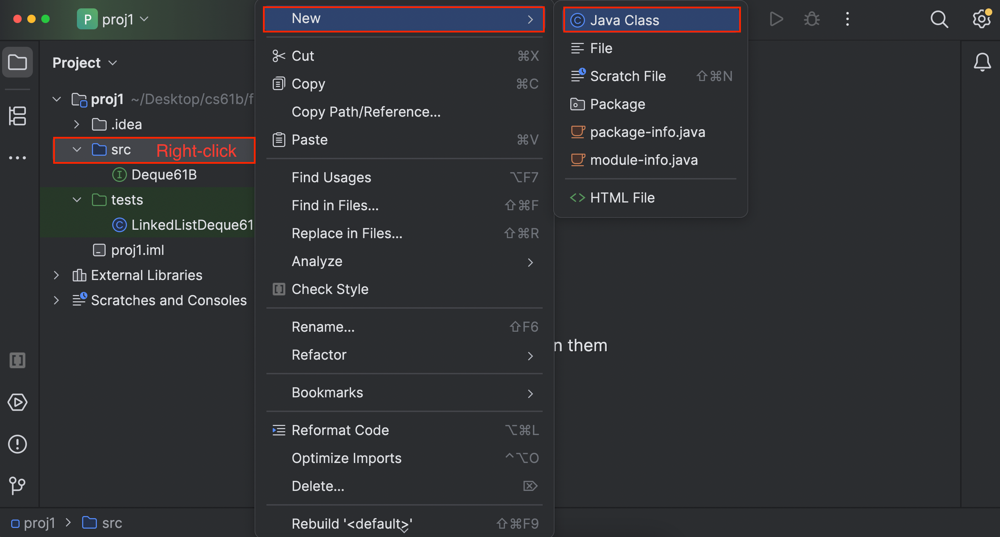
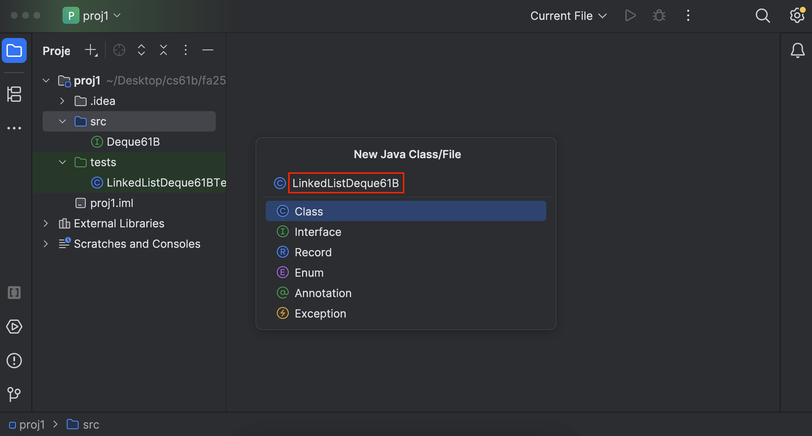
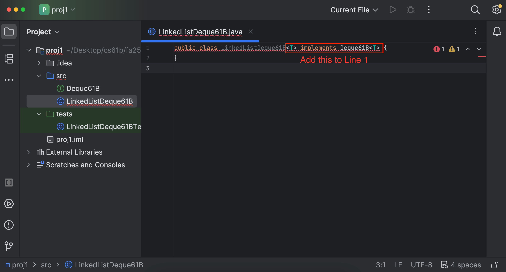
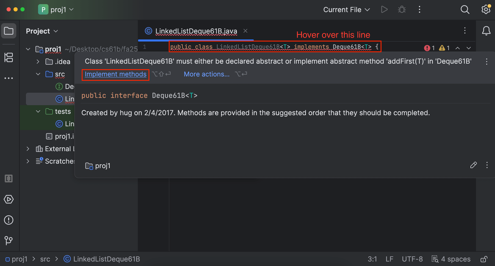
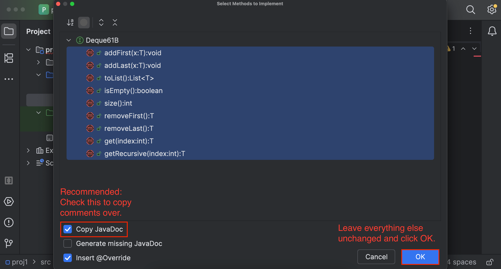
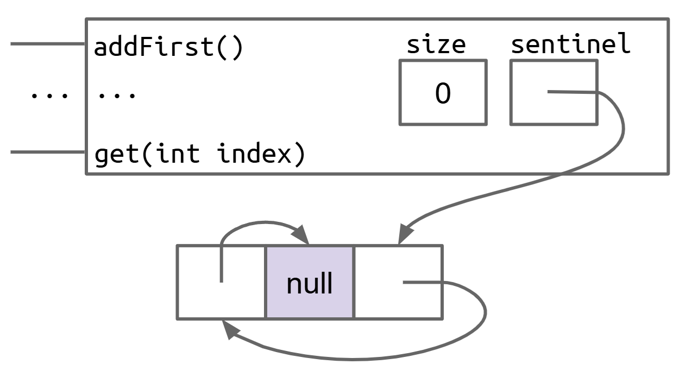
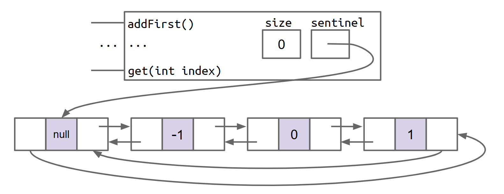

Mini-Project 1: LinkedListDeque61B
Spring 2026 TODO: Add a getFirst and getLast method.
Lectures needed for this project:
- Lecture 4 (SLLists), or Chapter 4 of the textbook.
- Lecture 5 (DLLists, Testing), or Chapter 5 of the textbook.
- Lecture 6 (Testing), or Chapter 7 of the textbook.
Partner policy: No partners. Discussing ideas with other students is allowed, but code sharing is not allowed, and the solutions you submit should be your own work! More details on the policies page.
In this assignment, we’ll use what we’ve learned in the first four lectures to build your own linked list implementation of a List. To keep the workload lighter, we won’t build a full list, but rather a Double Ended Queue (deque, pronounced “deck”).
By the end of this assignment, you will…
- Gain an understanding of the usage of a backing linked list in data structures.
- Have experience with using testing and test-driven development to evaluate the correctness of your own data structures.
For Mini-Project 1, we will provide a significant amount of scaffolding by giving explicit instructions. In Mini-Project 2, you’ll be completing a similar task, but with less scaffolding.
Setup
Follow the Assignment Workflow Guide to get started with this assignment. This starter code is in the proj1 folder.
On this project, you are limited to submitting to Gradescope 4 times every 24 hours. In other words, you have 4 submission tokens, each with a refresh rate of 24 hours.
Unlike previous assignments, not all tests will be provided locally, so it is up to you to write tests to verify the correctness of your own code. See the Writing Tests section for more details.
You must follow the style guide for LinkedListDeque61B.java, and you can check style yourself in IntelliJ as many times as you want. (The style checker is turned off for any tests you write.)
Task 1: Read the Deque61B ADT and API
The double ended queue is very similar to the SLList and AList classes that we’ve discussed in class. Here is a definition from the Java standard library.
A linear collection that supports element insertion and removal at both ends. The name deque is short for “double ended queue” and is usually pronounced “deck”. Most
Dequeimplementations place no fixed limits on the number of elements they may contain, but this interface supports capacity-restricted deques as well as those with no fixed size limit.
We don’t need all the methods defined in Java’s Deque, and have defined our own interface, which can be found in src/Deque61B.java.
For example, the get method is described as follows, in something called a Javadoc comment:
/** ...
* @param index index to get
* @return element at {@code index} in the deque
*/
T get(int index);
Here, @param indicates a parameter to the method, and @return indicates the return value of the method. The @code tag is used to format as code.
If you hover over the method name in IntelliJ, you’ll see a popup that looks like this, which is useful if you want to know what a method does:

Open the
Deque61B.javafile and read the documentation in it. This spec doesn’t have all the information you need to complete the project, so it’s important that you read through all of Deque61B.java!Seriously. Do not skip this. You will spend hours confused if you skip this step. Please save yourself the time and stress!
You should not edit
Deque61B.java.
Assignment Philosophy
A common beginner mistake is to write a large amount of code and hope that it all works once you’re finished. This makes life very difficult for a programmer. Imagine implementing all the methods above, submitting to the autograder, and getting back a message that says something like “call to get returned 9, expected 7”. You have no idea if the problem is the get method itself, or if some other necessary methods are broken.
To help encourage better programming habits, in Mini-Project 1, we’re going to hold your hands through the development process. You are not strictly required to follow the recommended steps, i.e. if you pass the autograder, then you get all the points, but we strongly encourage you to follow the steps outlined in this spec.
For the intended experience, follow these steps in order. If you do something else and ask us for help, we will refer you back to these steps.
Task 2: Creating the File
Start by creating a file called LinkedListDeque61B.
This file should be created in the proj1/src directory. To do this, right-click on the src directory, navigate to “New -> Java Class”, and give it the name LinkedListDeque61B.


We want our LinkedListDeque61B to be able to hold several different types. For example, a LinkedListDeque61B<String> holds Strings and a LinkedListDeque61B<Integer> holds Integers. To enable this, you should edit the declaration of your class so that it reads:
public class LinkedListDeque61B<T>
Recall from lecture that it doesn’t actually matter if we use T or some other string like LinkedListDeque61B<Glerp>. However, we recommend using <T> for consistency with other Java code.
We also want to tell Java that every LinkedListDeque61B is a Deque61B, so that users can write code like Deque61B<String> lld1 = new LinkedListDeque61B<>();. To enable this, change the declaration of your class so that it reads:
public class LinkedListDeque61B<T> implements Deque61B<T>
At this point, your class declaration should look like the line above.

However, this creates an error. In order for a LinkedListDeque61B to be a Deque61B, it needs to implement all the Deque61B methods.
Hover your mouse over the red squiggle, and click the “implement methods” button when the error message box pops up. This will autogenerate the method headers for you.


Next, you should create an empty constructor.
To do this, add the following code to your file, leaving the constructor blank for now.
public LinkedListDeque61B() {
}
Lastly, you should create a main method.
Your main method should look exactly like this:
public static void main(String[] args) {
Deque61B<Integer> lld = new LinkedListDeque61B<>();
lld.addLast(0); // [0]
lld.addLast(1); // [0, 1]
lld.addFirst(-1); // [-1, 0, 1]
}
Now you’re ready to start writing methods!
As you start writing code, keep in mind that you may not use any of the built-in
java.utildata structures in your implementation! The whole point is to build your own versions!There are a few places where you may use specific data structures outside of tests, and we will clearly say where.
Task 3: Constructor
In this section, you’ll implement the functionality needed so that the first line of the main method Deque61B<Integer> lld = new LinkedListDeque61B<>(); generates a new LinkedListDeque with the appropriate topology.
Recall that the “topology” is the shape of your linked list. Though there are numerous choices as discussed in lecture, for this project, you are required to implement a circular, doubly-linked topology with a sentinel.
The empty list is represented by a single sentinel node that points at itself. There is a single instance variable called sentinel that points at this sentinel. See this slide.
This slide link needs updating once I’ve created the new slides for Fa25.
As mentioned in lecture, this circular toplogy is the hardest to understand, but yields the simplest implementation.
Implement the constructor for LinkedListDeque61B.
In your constructor, you’ll need to:
- Add one or more instance variables to the
LinkedListDeque61Bclass. - Instantiate a sentinel node.
- Add one or more instance variables the to
Nodeclass. - Initialize the instance variables in the constructor.
If you’re stuck, look back at your solution to HW5: Stacks.
To verify that your solution is correct, set a breakpoint in your main method and verify using the visualizer that your code matches the expected topology (shown below for your convenience).

Do not add additional constructors to LinkedListDeque61B. We require that you have only the no-argument constructor.
Task 4: addFirst and addLast
Now, we’ll implement the other methods called in your main method.
Implement addFirst and addLast,
addFirst and addLast may not use looping or recursion. A single add operation must take "constant time," that is, adding an element should take approximately the same amount of time no matter how large the deque is. This means that you cannot use loops that iterate through all / most elements of the deque.
After implementing these two methods, set a breakpoint at the end of your main method and verify that the created LinkedListDeque61B matches the expected topology below.
Note that the arrows will likely look very messy in the Java visualizer, but with some effort you should be able to see that the topology is correct.

Note that in the visualizer diagrams, it might look like the arrows are able to point to the middle of an array or at specific fields of a node. Any time the visualizer draws an arrow that pointed at an object, the pointer is to the entire object, not a particular field of an object. In fact, it is impossible for a reference to point to the fields of an object in Java.
Task 5: toList
You may have found it somewhat tedious and unpleasant to use the debugger and visualizer to verify the correctness of your addFirst and addLast methods. There is also the problem that such manual verification becomes stale as soon as you change your code. Imagine that you made some minor but uncertain change to addLast. To verify that you didn’t break anything you’d have to go back and do that whole process again. Yuck.
What we really want are some automated tests. But unfortunately there’s no easy way to verify correctness of addFirst and addLast if those are the only two methods we’ve implemented. That is, there’s currently no way to iterate over our list and get back its values and see that they are correct.
That’s where the toList method comes in. When called, this method returns a List representation of the Deque61B. For example, if the Deque61B has had addLast(5), addLast(9), addLast(10), then addFirst(3) called on it, then the result of toList() should be a List with 3 at the front, then 5, then 9, then 10. If printed in Java, it’d show up as [3, 5, 9, 10].
If the Deque is empty, then toList should return an empty list with zero items, e.g. return new ArrayList<>(). The toList method should never return null.
Write the toList method.
The first line of the method should be something like List<T> returnList = new ArrayList<>(). This is one location where you are allowed to use a Java data structure. You can import ArrayList by using IntelliJ’s auto import or copying this statement:
import java.util.ArrayList; // import the ArrayList class
To verify that your toList method is working correctly, you can run the tests in LinkedListDeque61BTest.
To do this, open the LinkedListDeque61BTest.java file. You’ll see that every line has a // preceding it. Let’s remove all of the // comments except last line. To do this, highlight all the lines of the file that start with //. Then click “Code” in the top menu bar, then “Comment with Line Comment”. All the lines should now be uncommented. You can also use Ctrl+/ (Windows / Linux) or ⌘ / / Cmd+/ (Mac).
If you pass all the tests, you’ve established a firm foundation upon which to continue working on the project. Woo! If not, use the debugger and carefully investigate to see what’s wrong with your toList (or other methods). If you get really stuck, go back and verify that your addFirst and addLast methods are working.
You might realize that you can just dodge the rest of the project by calling
toListand calling the appropriate method. That would defeat the point of the project! You may not calltoListinside any method ofLinkedListDeque61B; there is an autograder test that checks for this.
Note: Later in the class, we’ll learn techniques that will allow us to test our data structures without converting them into a Java list first. This is purely for convenience on this first project.
Writing Tests
We’ve provided tests that verify that addFirst, addLast, and toList work. However, you’ll see that there are many more methods you’ll need to implement.
For these methods, you will need to write your own unit tests! Note: Our grader will test your tests to see if they are good enough. More on this below.
Sharing tests on projects will be considered academic misconduct (cheating). For this mini-project, we recommend that you try to write your own tests rather than just using someone else’s!
To write tests, we will use Google’s Truth assertions library. We love it because it’s easy to use and generates useful error messages.
We often write tests using the Arrange-Act-Assert pattern:
- Arrange the test case, such as instantiating the data structure or filling it with elements.
- Act by performing the behavior you want to test.
- Assert the result of the action in (2).
We will often have multiple “act” and “assert” steps in a single test method to reduce the amount of boilerplate (repeated) code.
You should write your tests in LinkedListDeque61BTest.java.
Truth Assertions
A Truth assertion takes the following format:
assertThat(actual).isEqualTo(expected);
To add a message to the assertion, we can instead use:
assertWithMessage("actual is not expected")
.that(actual)
.isEqualTo(expected);
We can use things other than isEqualTo, depending on the type of actual. For example, if actual is a List, we could do the following to check its contents without constructing a new List:
assertThat(actualList)
.containsExactly(0, 1, 2, 3)
.inOrder();
If we had a List or other reference object, we could use:
assertThat(actualList)
.containsExactlyElementsIn(expected) // `expected` is a List
.inOrder();
Truth has many assertions, including isNull and isNotNull; and
isTrue and isFalse for booleans. IntelliJ’s autocomplete will often give you suggestions for which assertion you can use.
If you do not assert anything, you will pass your own tests, even if your implementation is incorrect! For example, the following test will pass, even if
addFirstdoes nothing:@Test public void noAssertionTest() { Deque61B<String> lld = new LinkedListDeque61B<>(); lld.addFirst("front"); }You also must remember to use
.isTrue()or.isFalse()when asserting boolean statements. For example, the following test will always pass, even ifisEmptyalways returnsfalse!@Test public void isEmptyTest() { Deque61B<String> lld = new LinkedListDeque61B<>(); assertThat(lld.isEmpty()); }The last line of the above test should instead be
assertThat(lld.isEmpty()).isTrue();.
Example Test
Let’s break down the provided addLastTestBasic:
@Test
/** In this test, we use only one assertThat statement.
* Sometimes, the tedious work of adding the extra assertion statements isn't worth it. */
public void addLastTestBasic() {
Deque61B<String> lld1 = new LinkedListDeque61B<>();
lld1.addLast("front"); // after this call we expect: ["front"]
lld1.addLast("middle"); // after this call we expect: ["front", "middle"]
lld1.addLast("back"); // after this call we expect: ["front", "middle", "back"]
assertThat(lld1.toList()).containsExactly("front", "middle", "back").inOrder();
}
@Testtells Java that this is method is a test, and should be run when we run tests.- Arrange: We construct a new
Deque61B, and add 3 elements to it usingaddLast. - Act: We call
toListonDeque61B. This implicitly depends on the earlieraddLastcalls. - Assert: We use a Truth assertion to check that the
toListcontains specific elements in a specific order.
You must call
toList()if you want to check the contents of yourLinkedListDeque61B. For example,assertThat(lld1).containsExactly("front", "middle", "back").inOrder();will not work, because Google Truth doesn’t know how to iterate overlld1to see its contents. In a later lecture, we will see how to make our Deques iterable so that Google Truth will know how to check their contents.assertThat(lld1).isEqualTo(...)will also not work.
Task 6: isEmpty and size
Now you should test and implement all the remaining methods. For the rest of this project, we’ll describe our suggested steps at a high level. We strongly encourage you to follow the remaining steps in the order given.
In particular, write tests before you implement. This is called “test-driven development,” and helps ensure that you know what your methods are supposed to do before you do them.
Write one or more tests for isEmpty and size. Run them and verify that they fail. Your test(s) should verify more than one interesting case, such as checking both an empty and a nonempty list, or checking that the size changes.
For these tests, you can use the isTrue or isFalse methods on your assertThat statements.
Your tests can range from very fine-grained, e.g. testIsEmpty, testSizeZero, testSizeOne to very coarse grained, e.g. testSizeAndIsEmpty. It’s up to you to explore and find what granularity you prefer.
After you’ve written tests, you can implement isEmpty and size.
These methods must take constant time. That is, the time it takes to for either method to finish execution should not depend on how many elements are in the deque.
Task 7: get and getRecursive
Write a test for the get method. Make sure to test the cases where get receives an invalid argument, e.g. get(28723) when the Deque61B only has 1 item, or a negative index. In these cases get should return null.
get must use iteration.
After you’ve written tests and verified that they fail, implement get.
Since we’re working with a linked list, it is interesting to write a recursive get method, getRecursive.
Copy and paste your tests for the get method so that they are the same except they call getRecursive. (While there is a way to avoid having copy and pasted tests, though the syntax is not worth introducing – passing around functions in Java is a bit messy.)
After you’ve copy-pasted tests and verified that they fail, implement getRecursive.
Task 8: removeFirst and removeLast
Lastly, write some tests that test the behavior of removeFirst and removeLast, and again ensure that the tests fail. For these tests you’ll want to use toList! Use addFirstAndAddLastTest as a guide.
Do not maintain references to items that are no longer in the deque. The amount of memory that your program uses at any given time must be proportional to the number of items. For example, if you add 10,000 items to the deque, and then remove 9,999 items, the resulting memory usage should amount to a deque with 1 item, and not 10,000. Remember that the Java garbage collector will “delete” things for us if and only if there are no pointers to that object.
If Deque61B is empty, removing should return null.
removeFirst and removeLast may not use looping or recursion. Like addFirst and addLast, these operations must take "constant time." Refer to the section on writing addFirst and addLast for more information on what this means.
After you’ve written tests and verified that they fail, implement removeFirst and removeLast.
Task 9: Testing Your Tests
Above, we mentioned that we’ll test your tests to see if they are good enough. Our autograder will actually test your tests to make sure that they have sufficient “coverage”. That is, we will essentially be taking your test file (LinkedListDeque61BTest.java) and using it to “test” our staff solution of LinkedListDeque61B.
Using some autograder magic, we’re able to determine which edge cases your tests are able to hit, thus telling us the “coverage” of your test suite. In order to get a full score on the testing component, you’ll need to think about interesting corner cases.
If you would like to check how good your tests are, you can use the “[Ungraded] Mini-Project 1: LinkedListDeque Test Coverage” assignment on Gradescope. This assignment is ungraded and does not affect your grade. It is a subset of the full autograder that only checks your tests, not your actual LinkedListDeque implementation. In other words, the coverage tests from the full autograder have been duplicated in this ungraded assignment. Unlike the full autograder, this ungraded assignment has no token limit, so you can use this ungraded assignment to check your test quality as often as you’d like.
Note that you only need 120 points across the three mini-projects in order to get a maximum score. Don’t stress if you miss a few.
Our staff solution also only has a constructor that takes 0 arguments, which means that your tests should only use a constructor that takes 0 arguments.
Passing the coverage checker does not mean that your tests are perfect! It’s possible that your
LinkedListDeque61BTestpasses our tests, but fails to detect a bug in yourLinkedListDeque61B.Our coverage checker only examines the ways the calls you make to the
LinkedListDeque. It does not check the assertions that you make.If you find yourself failing autograder tests that you think you have coverage for, a good next step is to add additional assertions to your own tests. Examples include verifying the result of every call, checking the entire deque between every call, or checking the results of other deque methods.
While the coverage checker can check how much you do to the deque, it doesn’t check what you assert about the deque.
If you’re stuck and your tests aren’t passing the autograder tests, we’ve provided description of the required flags below.
Flags for add tests
- “add_first_from_empty”: Check that
addFirstworks on an empty deque. - “add_last_from_empty”: Check that
addLastworks on an empty deque. - “add_first_nonempty”: Check that
addFirstworks on a non-empty deque. - “add_last_nonempty”: Check that
addLastworks on a non-empty deque.
Flags for add after remove tests
- “add_first_after_remove_to_empty”: Add some elements to a deque and remove them all, then check that
addFirststill works. - “add_last_after_remove_to_empty”: Add some elements to a deque and remove them all, then check that
addLaststill works.
Flags for remove tests
- “remove_first”: Check that
removeFirstworks. - “remove_last”: Check that
removeLastworks. - “remove_first_to_empty”: Add some elements to a deque and remove almost all of them. Check that removing the last element with
removeFirstworks. - “remove_last_to_empty”: Add some elements to a deque and remove almost all of them. Check that removing the last element with
removeLastworks. - “remove_first_to_one”: Add some elements to a deque and remove almost all of them. Check that removing the second to last element with
removeFirstworks. - “remove_last_to_one”: Add some elements to a deque and remove almost all of them. Check that removing the second to last element with
removeLastworks.
Flags for get tests
- “get_valid”: Check that
getworks on a valid index. - “get_oob_large”: Check that
getworks on a large, out of bounds index. - “get_oob_neg”: Check that
getworks on a negative index. - “get_recursive_valid”: Check that
getRecursiveworks on a valid index. - “get_recursive_oob_large”: Check that
getRecursiveworks on a large, out of bounds index. - “get_recursive_oob_neg”: Check that
getRecursiveworks on a negative index.
(oob stands for “out of bounds”)
Flags for size tests
- “size”: Check that
sizeworks. - “size_after_remove_to_empty”: Add some elements to a deque and remove them all, then check that
sizestill works. - “size_after_remove_from_empty”: Remove from an empty deque, then check that
sizestill works.
Flags for isEmpty tests
- “is_empty_true”: Check that isEmpty works on an empty deque.
- “is_empty_false”: Check that isEmpty works on a non-empty deque.
Flags for toList tests
- “to_list_empty”: Check that toList works with empty LinkedListDeque61B.
- “to_list_nonempty”: Check that toList works with non-empty LinkedListDeque61B.
Submission
Once you’ve written local tests for every method and passed them, follow the Assignment Workflow Guide to submit to the autograder. You may or may not pass everything.
- If you fail any of the coverage tests, it means that there is a case that your local tests did not cover. In Task 9, we enumerate a list of test cases that you should cover.
- If you fail any of the timing tests, it means that your implementation does not meet the timing constraints described above.
- The autograder will not run unless you fix all your style errors. Reminder that you can check style in IntelliJ as often as you’d like:

- You will have a token limit of 4 tokens every 24 hours. We will not reinstate tokens for failing to add/commit/push your code, run style, etc.
Scoring
This project is divided into individual components.
- Empty list (15%): Define a valid
Nodeclass and correctly implement the constructor. - Adding (25%): Correctly implement
addFirst,addLast, andtoList. - isEmpty, size (5%): Correctly implement
isEmptyandsizewith add methods working. - get (5%): Correctly implement
get. - getRecursive (5%): Correctly implement
getRecursive. - Removing (25%): Correctly implement
removeFirstandremoveLast. - Integration (10%): Pass an integration test suite that randomly calls all the methods.
- Test Coverage (10%): Write tests to capture a sufficient number of flags. We will run your tests against a staff solution and check how many scenarios and edge cases are tested. (See Task 9 for a list of flags.)
The score you receive on Gradescope is your final score for this assignment (assuming you followed the collaboration policy).